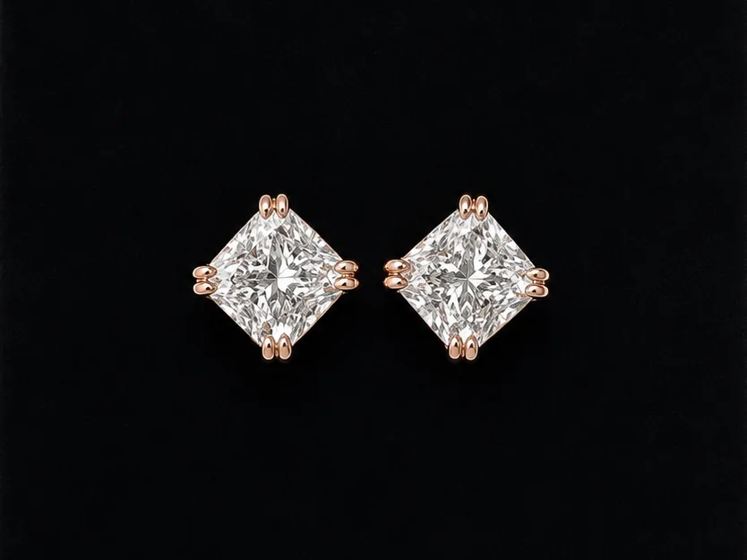
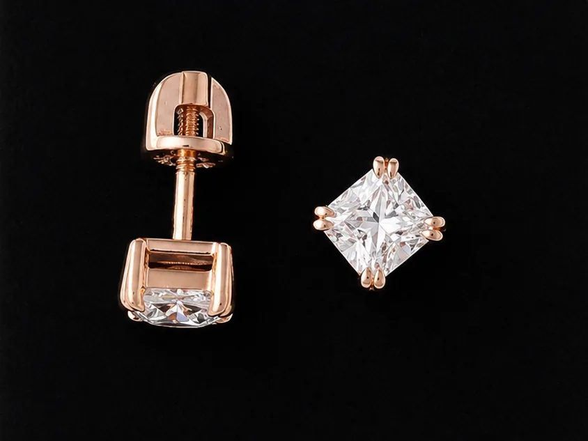

Two natural cushion-cut diamonds of 0.92ct and 0.95ct, both E colour and VS1 clarity, GIA certified, sourced as a pair and set as rose gold studs on screw-back fittings.
A stud is the least forgiving setting there is. There is no shoulder, no halo and no band to draw the eye — the stone is the whole piece, seen face-up, at close range, from the side. Anything the cut does badly shows immediately.
Cushions make that harder again. The name covers a wide family of faceting, from the older chunky-facet stones that throw broad coloured flashes to the modern “crushed ice” brilliants that read as a fine, dense sparkle. Two cushions of the same weight and grade can look nothing alike. Matching a pair means matching outline, corner rounding, depth and facet pattern — none of which appear as a single number on a certificate.
Stone details
| Shape | Carat | Colour | Clarity | Certification |
|---|---|---|---|---|
| Cushion | 0.95ct | E | VS1 | GIA |
| Cushion | 0.92ct | E | VS1 | GIA |
The 0.03ct difference between the two is deliberate rather than a compromise. Weight is a poor proxy for how large a stone looks: spread across the table, depth and outline decide that. These two were chosen because they measure alike face-up, which is what the eye actually compares. Buying two stones of identical stated weight but different proportions would have produced a visibly uneven pair.
E colour sits at the top of the colourless range, one grade below D, and is a considered choice in rose gold. Warm metal reflects into a stone; against pink gold an E reads as bright and clean, while the money saved over D goes into cut quality and matching, which are what the pair is judged on from a metre away. VS1 means the inclusions are invisible without magnification — important in a stud, which is often seen closer than a ring.

The setting was kept as quiet as possible: rose gold, four corners, doubled claws for security, and an open gallery beneath so light passes through the pavilion rather than dying against a closed back. Screw fittings were specified over friction backs — on a stone at this weight, the extra half-second putting them on is worth it.
Every stone I source is accompanied by independent certification from a recognised gemological laboratory, and I talk the client through what that report actually says before any decision is made.